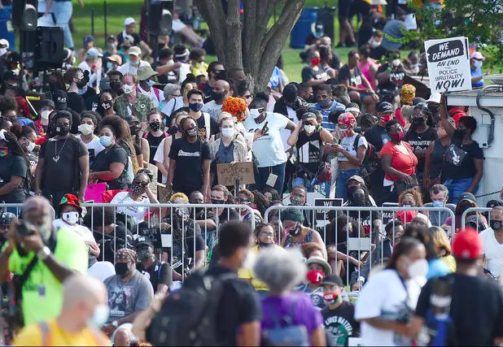

2020-08-29 21:23:19 来源：人民日报
当地时间8月28日，大批示威者聚集在美国首都华盛顿的林肯纪念堂，以纪念民权运动领袖马丁·路德·金发表著名演讲《我有一个梦想》57周年，同时呼吁种族平等和司法改革。

本次游行活动主题为“让你的膝盖离开我们的脖子”，直接指向因白人警察暴力执法导致非裔男子乔治·弗洛伊德窒息而亡的事件。
马丁·路德·金三世也参与了此次活动。他表示，他的父亲马丁·路德·金将为来到这里为正义而战的人们感到自豪，对于他们仍处在这样一个支离破碎的社会也将感到十分难过。
当地时间8月23日，美国威斯康星州基诺沙市29岁的非裔男子雅各布·布莱克被警察从背后连续枪击，再次点燃了美国民众的怒火，预计全美还将举行更多反种族主义示威活动。
(来源:央视新闻)